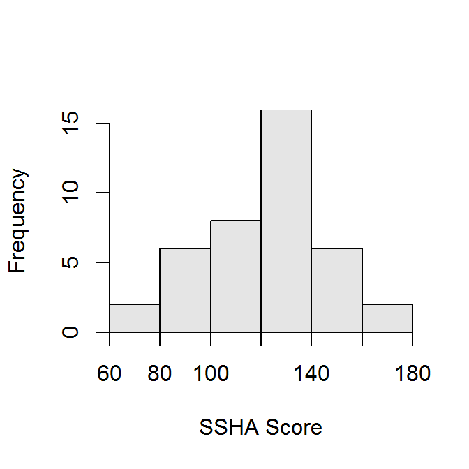
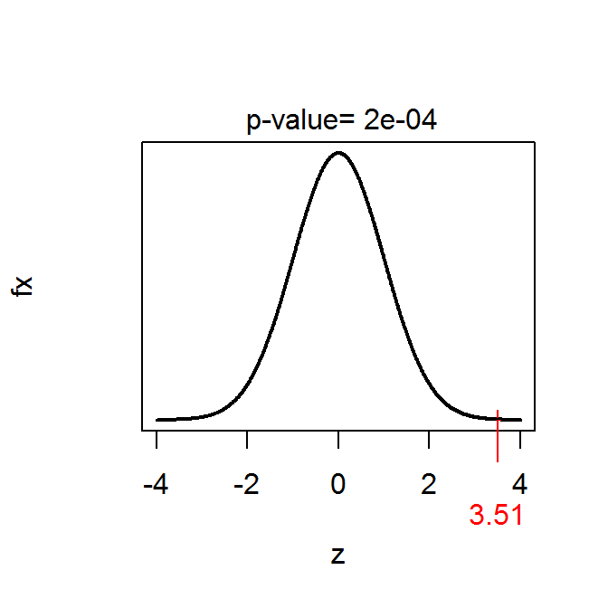

The Survey of Study Habits and Attitudes (SSHA) was a psychological test that measures the motivation, attitudes, and study habits of college students. Scores range from 0 to 200 and follow (approximately) a normal distribution, with a mean of 110 and a standard deviation of 20. The survey was given to 40 “non-traditional” students to test the hypothesiis that they had stronger study habits and greater motivation for school work.
The results of the study are in SSHA.csv. Use these data to test the hypothesis at the 5% level.
library(NCStats)setwd("C:/stats/")
d <- read.csv("SSHA.csv")str(d)## 'data.frame': 40 obs. of 1 variable:
## $ score: int 113 131 108 72 124 129 125 100 141 117 ...Summarize(~score,data=d,digits=1)## n mean sd min Q1 median Q3 max
## 40.0 121.1 24.8 72.0 106.8 125.0 138.0 180.0hist(~score,data=d,xlab="SSHA Score")
( z1 <- z.test(d$score,sd=20,mu=110,alt="greater",conf.level=0.95) )## One Sample z-test with d$score
## z = 3.5101, n = 40.000, Std. Dev. = 20.000, Std. Dev. of the
## sample mean = 3.162, p-value = 0.0002239
## alternative hypothesis: true mean is greater than 110
## 95 percent confidence interval:
## 115.8985 Inf
## sample estimates:
## mean of d$score
## 121.1plot(z1)